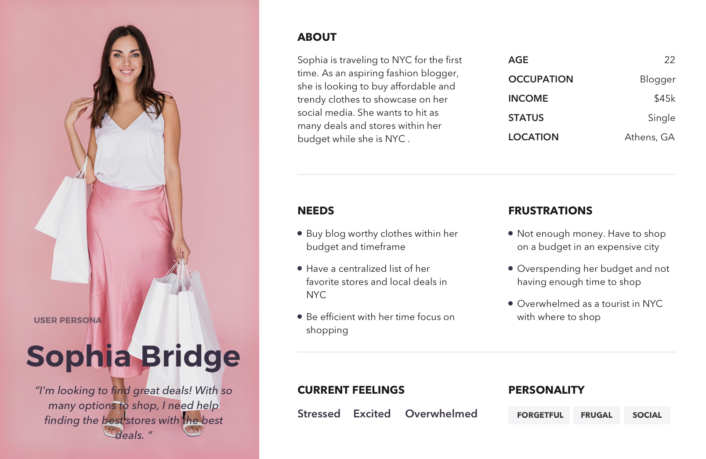

DESIGN PROCESS
USER RESEARCH
Scoping the problem
My research encompassed using competitive analysis and finding out the motivations behind ecommerce apps, which hare to find deals, make purchases at any time, compare products and prices, and save time.
Deals & Discounts
Receiving discounts makes consumers more likely to use e-commerce apps. 84% would opt-in to receive discounts for enabling push notifications.
Reccomendations and filters
E-commerce offer recommendations for similar products. About 70% of consumers would use recommendations.
Personalization
59% of respondents would opt-in for a personalize in-store experience for ecommerce apps.
AroundMe
AroundMe quickly identifies your position and allows you to choose the nearest Bank, Bar, Gas Station, Hospital, Hotel, Movie Theatre, Restaurant, Supermarket, Theatre and Taxi. AroundMe shows you a complete list of all the businesses in the category you have tapped on along with the distance from where you are.
- Easy Navigation
- Apparent signifiers and call to action
- Straightforward icons and features
- Lack Filters
- Information out of date
- Functionality problems


Places Around Me
Places Around Me helps you to find Airport, ATM, Bank, Bar, Cafe, Hospital, Gas Station and total 66 types of places around you.Using this application you will find nearest places in minimal time.It allows you to save places for later use.
- Clean interface with intuitive design
- Pictures of Locations
- List and Map view to view locations
- No Manual indication of location
- Doesn't accurately find locations in some areas
USER PERSONA
Understanding the User
Target audience for app is for clothes consumers, Shopaholics tourists, women or people that identify as female, and especially shoppers with a budget or time restraint. Because the audience for shoppers is so broad, I narrowed the scope to gear towards women's clothing.
